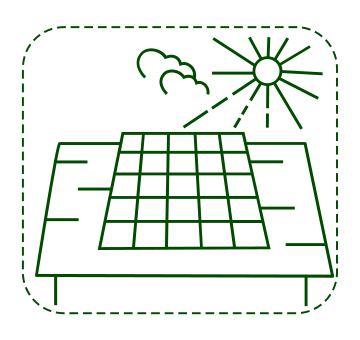
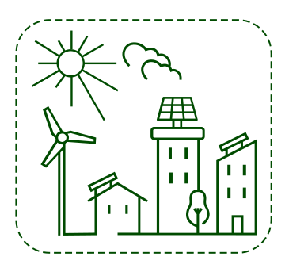

El autoconsumo solar, es decir, instalar placas solares en tu tejado o cerca para generar tu propia energía renovable, es la solución definitiva frente a los altos precios de la energía y una de las mejores herramientas contra el cambio climático.
Si tienes una vivienda en propiedad pasarte al autoconsumo de energía solar es muy sencillo porque solo necesitarás un tejado (o ubicación próxima) en el que poder instalar las placas. El cómo hacerlo varía en función de si vives en una vivienda unifamiliar o en un bloque de pisos.
Aunque no tengas un tejado en propiedad, el autoconsumo de energía renovable también es posible. No es necesario tener mucho dinero ni grandes conocimientos para librarse de la dictadura de las grandes energéticas y bajar tu factura de la luz.
Si tienes una casa aislada, tipo chalet, solo tienes que contactar con una empresa especializada y con experiencia contrastada. Te asesorarán y gestionarán todo el papeleo, incluidas las ayudas y subvenciones que existan. Recuerda pedir varios presupuestos y comparar.
Además, puedes unirte con vecinos y vecinas de tu zona para organizar lo que se conoce como compras colectivas: hacer un pedido de placas fotovoltaicas entre varias personas para conseguir mejores precios. O también podéis compartir una misma instalación, lo que se conoce como autoconsumo colectivo.
Descubre más información en nuestra guía de autoconsumo solar y utiliza nuestra calculadora para saber cuánto podrías ahorrarte en la factura de la luz si te pasas al autoconsumo solar.
El autoconsumo de energía solar también es posible si tienes un piso en un bloque de vecinos/as. Solo se necesita un tejado o espacio próximo lo suficientemente grande para poder realizar la instalación.
Existen varias opciones: cubrir consumos de zonas comunes (ascensor, iluminación, garaje, piscina, etc.), cubrir tu consumo particular y el de las viviendas que quieran participar o cubrir ambas.
Para ponerlo en marcha solo hay que contar con el voto a favor de 1/3 de tus vecinos y vecinas si es para uso particular, o tener mayoría simple si es para usos comunes.
Descubre más información en nuestra guía de autoconsumo solar y utiliza nuestra calculadora para saber cuánto podrías ahorrarte en la factura de la luz si te pasas al autoconsumo solar.
Siempre puedes intentar convencer a tu casero/a para que instale placas y revalorice el piso energéticamente (la calificación energética cada vez será de mayor valor y obligación). Además, podrá vender o alquilar más fácil y rápido ya que la casa “prácticamente no paga luz”.
Además, con las bonificaciones locales actuales en el IBI (Impuesto de Bienes Inmuebles) y otras desgravaciones fiscales y ayudas puede que le salga sorprendentemente barato y lo vea como una inversión para su bolsillo y el planeta.
Desde 50 euros ya puedes invertir y convertirte en copropietaria de instalaciones renovables en otro lugar para reducir directamente tu factura o recibir un retorno económico. También puedes prestar tus ahorros a plataformas de inversión social para que otras personas instalen renovables y luego recuperarlos con algo de interés.
Si quieres conocer más detalles sobre esta opción así como algunas cooperativas a las que ya puedes sumarte, descárgate nuestra guía de autoconsumo solar.
Si tienes algún vecino/a, colegio o edificio público que hace autoconsumo a menos de 2 km puedes enchufarte a ellos.
Se llama autoconsumo colectivo y puedes conocer más detalles sobre esta opción en nuestra guía.
Presiona a tu ayuntamiento para que instale renovables que cubran la demanda de edificios públicos y de todo el vecindario. Pueden empezar con un autoconsumo colectivo desde sus tejados o ir mucho más allá, instalando renovables en su término municipal o creando una comunidad energética, donde ofrecer otros servicios a la ciudadanía (movilidad sostenible, eficiencia y rehabilitación energética, etc).
Conoce más detalles sobre esta opción en nuestra guía de autoconsumo solar.
En Greenpeace utilizamos cookies propias y de terceros para mejorar y personalizar tu experiencia en nuestra web, así como con fines analíticos, para ofrecer funciones de redes sociales y mostrarte publicidad personalizada en base a un perfil elaborado a partir de tus hábitos de navegación. Para más información puedes consultar nuestra política de cookies AQUÍ.
Puedes aceptar todas las cookies mediante el botón “Aceptar” o puedes aceptarlas de forma concreta, modificar su selección o rechazar su uso pulsando en “Configuración de Privacidad”."
Este sitio web utiliza cookies para obtener datos de navegación y de uso de la página por parte de los usuarios y usuarias. Puedes ver más información en nuestra Política de Cookies. A continuación puedes leer más sobre ellas y elegir cuáles aceptas y cuáles rechazas mientras estás en nuestra web.